A statistical model is a measurable space
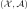
together with a family of
probability measures on it, indexed by a parameter
of
probability measures on it, indexed by a parameter  . The
model is dominated by a measure
. The
model is dominated by a measure  if each
if each 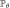
has a density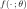
with respect to, and
identifiable if 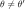
implies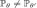
. A sample of size is a
vector
is a
vector 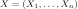
of independent random variables with common law .
A statistic is a measurable function of the sample alone, carrying no
. An estimator of a quantity  is a statistic
is a statistic
 ; its bias is
; its bias is
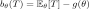
, and it is unbiased if the bias vanishes for every. Its mean
squared error is
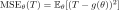
.For a square-integrable estimator,
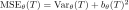
. In particular an unbiased estimator has mean squared error equal to its variance, and a biased one can beat it.Write
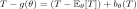
. Squaring and taking expectations, the cross term is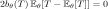
, leaving the variance and the squared bias.A sequence of estimators
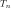
, with a function of a sample of size, is consistent for if
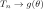
in probability under , for every.
Let the model have finite variance
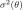
and mean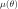
, and let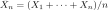
. Then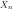
is an unbiased and consistent estimator of , with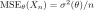
; and it is strongly consistent – convergence holds almost surely – when the fourth moment is finite.Unbiasedness is linearity of expectation. The mean squared error equals the variance, which is
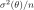
since the sample is independent. Consistency is the weak law of large numbers applied under , and the almost sure statement is the strong law under the fourth-moment hypothesis.With
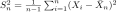
and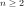
, .Assume
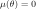
, which changes neither side. Expanding,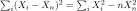
. Taking expectations,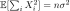
and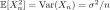
by independence, so the total is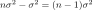
. Dividing by gives the claim.
gives the claim.
The divisor is exactly the correction for having estimated the
mean from the same data, and the proposition is the whole justification
of it; with in the denominator the estimator is biased downwards
by a factor
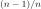
. Unbiasedness is a weaker virtue than it looks, though – the bias-variance decomposition shows an estimator may trade a little bias for a large reduction in variance and win.